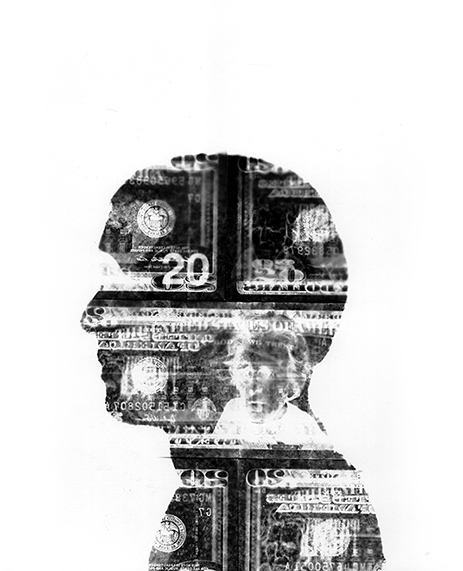

dominique teoh
Out of the Shadows is a short documentary about Quinto Imperio, a Cumbia band from Chicago’s Back of the Yards neighbourhood. It is a story of immigrants who are undocumented, unapologetic, and unafraid to fight for their future and for the future of youth from a community that is often misunderstood.
Co-creators: Amanda Hermans, Caroline Olsen
|Nominated for a student achievement award by the National Academy of Television Arts and Sciences|Featured on Univision’s Despierta Chicago|Available for school, university, and community screenings
Selected graphics done for “The Sword of Damocles,” the Medill Justice Project’s documentary on Tommy Zeigler - a man who spent the past four decades on deathrow over a potentially wrongful conviction.Find out more about the good work that the Medill Justice Project does here.
Skate video featuring Wann Senn, co-founder of Continuity Skateboards and longtime friend.
Animation combining hand-drawn images with video.
Portrait of philanthropist Frank Lowy at the 2013 March of the Living in Poland.
Exhibited at the United Nations Headquarters in New York as part of the exhibition, “When You Listen to a Witness, You Become a Witness” (2014). The exhibition was subsequently published as the book, “Witness: Passing the Torch of Holocaust Memory to New Generations."
Fashion photography for the blog joannaxko.com.
Bled, 2014
Barmelweid, 2015
Berlin, 2016
Chicago, 2016
Baie des trépassés, 2014
Schiers, 2016
Switzerland, 2015
Antelope Canyon, 2017
Lenzburg, 2014

Dominique is a filmmaker, primarily interested in factual content. He is a senior at Northwestern University, where he studies Radio/TV/Film and Political Science. Born and raised in Malaysia to Chinese and Swiss parents, and having studied in Italy and the United States, he is often drawn to issues of migration and cultural identity. He knows some things, but there's also a lot he doesn't know, so he continues to learn from those around him.If the camera's not rolling, his skateboard is.
domteoh@gmail.com